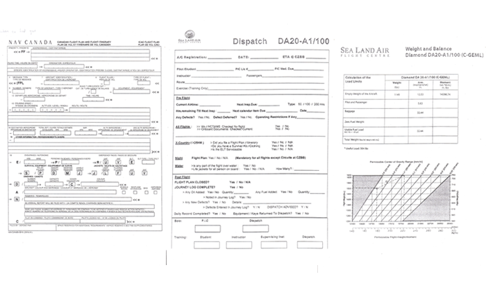
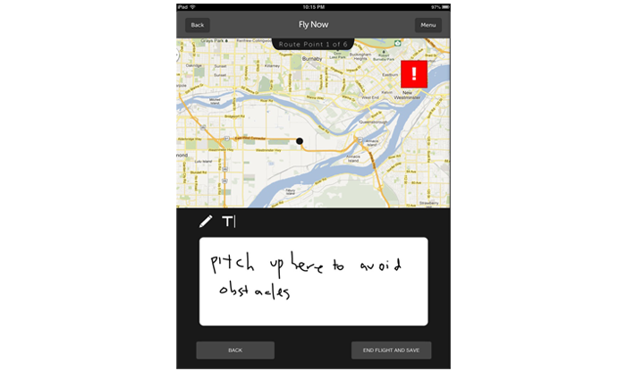

Type
School project
Role
Visual Lead
Interaction Designer
Interface Designer
Cinematographer
Film Editor
Software


Team
Brendan DeBrincat
Soojin Lee
Yan Yao Li
Debra Wong
Objective
Design an application for novice drivers to help them achieve their goals.
Process
The brief given was to design for novice drivers, which the team had decided to take one step further in looking at novice pilots. The reason for such is that most design problems revolves around transportations we use often, but we wanted to consider how new individuals operate a flying vehicle. Our research began with simple Google searches to understand the general background of pilots, followed by a site visit at the airport and that we have interviewed with various types of pilots to gather information about their experience as a novice. Once all the data has been collected, the team began brainstorming various flows that the system can offer in order to achieve the best result. Afterwards, screen designs such as use of colour and typography were implemented, which lead to coding in a digital prototype. In this project, I was the idea initiator where I was involved leading the team in terms of visual aesthetics and interactions across the application.
- 
Result
By creating a design in an unknown field, it was a great opportunity to learn about obstacles and knowledge needed to maneuver a vehicle in three-dimensional space. With research conducted, the pilots that we have interviewed and executed usability testing mentions that the simple application offers a great educational tool for novice pilots in preparing for their exams which allows them to understand their weaknesses to improve on.
- 